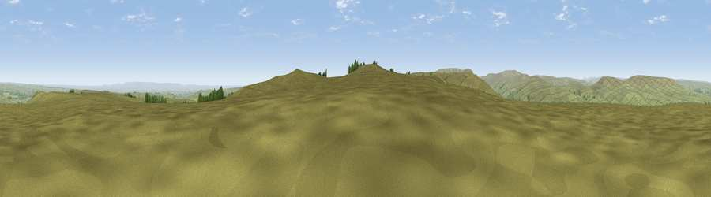

Viewpoint near West Scrafton
#9003 in England · top 12% of its area beats it · near West ScraftonThe view, rendered

A 360° render of this exact spot computed from the terrain model, tree cover and land cover — summer colours, afternoon light, calibrated against photographs of famous viewpoints. Real trees, hedges and buildings will differ in detail.
The panorama
Grey silhouette: terrain skyline in each direction (720 bearings, Earth curvature and refraction included). Dashed green: skyline with trees (+15 m) and buildings (+8 m) as obstacles. Blue strip: how far the ground is visible on each bearing.
Where the view opens
Wedge length = distance to the farthest visible ground on that bearing (vegetation-aware). Rings at 10, 25 and 50 km.
What fills the view
92% grassland · 4% cropland · 3% woodland
Angular shares of the visible panorama (visual magnitude), not map area. Landscape diversity 0.15 (0–1 Shannon).
Key numbers
More beautiful places nearby
The staircase of upgrades: each row has a higher view potential than everything closer. Driving times are estimates from straight-line distance, calibrated against real road routing — check an actual route before setting out.
| Place | Direction | Drive | Score |
|---|---|---|---|
| Little Haw | SSE · 0 km | ~1 min | 66.8 |
| Great Roova Crags | NNE · 2 km | ~5 min | 72.5 |
| Viewpoint near Coverham | NE · 5 km | ~11 min | 73.7 |
| Viewpoint c9553_8056 | WSW · 6 km | ~12 min | 74.9 |
| Viewpoint near West Witton | NNW · 6 km | ~14 min | 75.6 |
| Viewpoint near East Witton | ENE · 8 km | ~16 min | 77.8 |
| Whernside | W · 34 km | ~52 min | 79.9 |
| Viewpoint near Kirby Knowle | E · 38 km | ~57 min | 80.5 |
54.22174, -1.88456 · source: screening · position refined by local search. Computed location — check access rights before visiting.